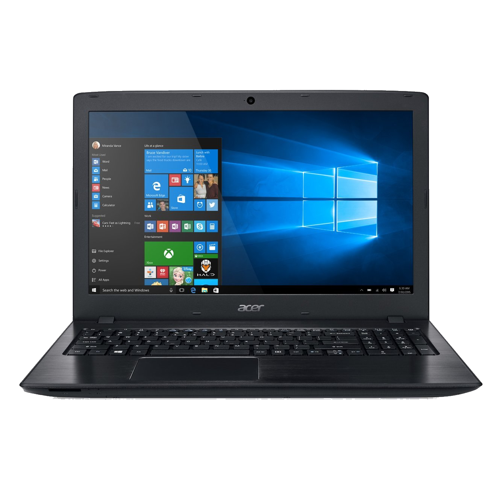
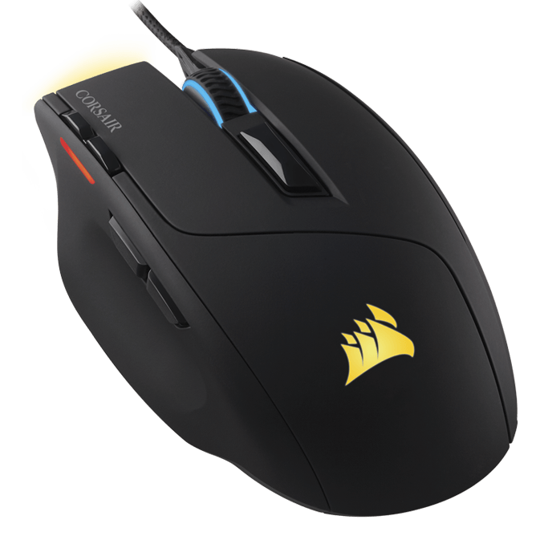

Resources
Headphones:

On the subject of music, I'd like to discuss headphones. As a person who loves video games, not only is it good to have good sound, but also a good microphone to communicate with others. After looking around for a while, I've come to the conclusion that the Arctis 5 by SteelSeries is by far one of the best set of headphones I've ever come across. Not only does it have sound quality of studio headphones (which can end up costing up to $1,500), but also a microphone with ClearCast technology, a technology that cancels out most noise around you automatically. (They have a whole article explaining how it works here) It doesn't end there either. The headphones have slick design, customization, and even RGB lighting, something only dreamed of by some. For $100 only, I think this product is definitly worth the money.
Laptop:
When it comes down to it, most computers just don't have the power I want, especially within my price range. I hate having to spend extra money for things that I can get cheaper somewhere else, and now I've found that "cheapest" place. The Acer Aspire E 15 by Acer, specifically the E5-575G-57D4 model, is definitely worth the money. Coming in at less than $600, it works as an amazing computer for all purposes. You probably know by now that I like to game, and this computer definitely works for me. Though it may not be able to play the on crazy graphics, it can run almost all of the modern games with amazing performance. The one downside I would say I have with this laptop it it's storage. Only having 256GB won't help me a whole ton when I want to try to download all of my games, or maybe sync my music. The upside of this storage system is that it is one of the only laptops out there to have an SSD. This is significant because SSD are proven to run up to 10x faster than an HDD, which is what most computers use. This is the ultimate dream laptop for budget gamers, hands down.
Mouse:
The problem is, when we talk about gaming equipment, people tend to think that things should cost more than they normally should. For example, I've seen tons of gaming pcs that end up costing over $2,000, along with gaming mice, that can cost around $200. In my opinion, this is ridiculous! I understand that gaming equipment usually tends to be much better in quality than normal equipment for just browsing the internet, but it shouldn't need to cost $1,000 more! I think that Corsair proves this with their Sabre gaming mouse. Costing only $50, this mouse has RGB lighting that you can customize, 10,000 dpi, and decent weight. It's everything on your $200 mouse, but $150 cheaper. I can say with confidence that this is one of the best budget gaming mice out there.
Music:
As a person who loves chiptune music, I had to share this resource. I love chiptune music because I love retro-sounding, video game music, and 8-bit music, or chiptune music, definitly gives off that retro-y vibe. Opinions aside, I used to use 8bitcollective, which was not only one of the hugest collections of chiptune music out there, but all the music was free to download! Unfortunately, their site is down. It has been since 2012. Luckily, some kind people at 2xAA, another big name when it comes to chiptnue music, were able to release an archive of the collection here, just like the old one. Now you can now get back to enjoying those 5-channel songs!